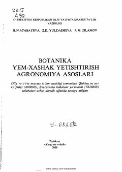

BYBotanika, yem-xashak yetishtirish va agronomiya asoslari bo'yicha oliy ta'lim darsligi.
Ushbu darslik botanika, yem-xashak yetishtirish va agronomiya asoslari fanlarini qamrab olib, qishloq xo'jaligi mutaxassisliklari talabalari uchun mo'ljallangan. Kitobda o'simliklar hujayra tuzilishi, sistematikasi, yem-xashak ekinlarini yetishtirish texnologiyasi hamda dehqonchilik va tuproqshunoslik haqida batafsil ma'lumot berilgan.